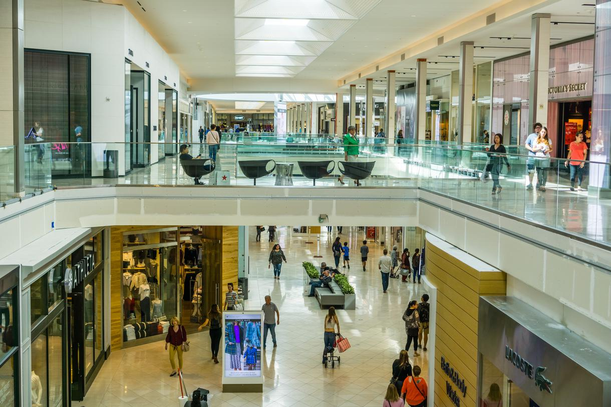
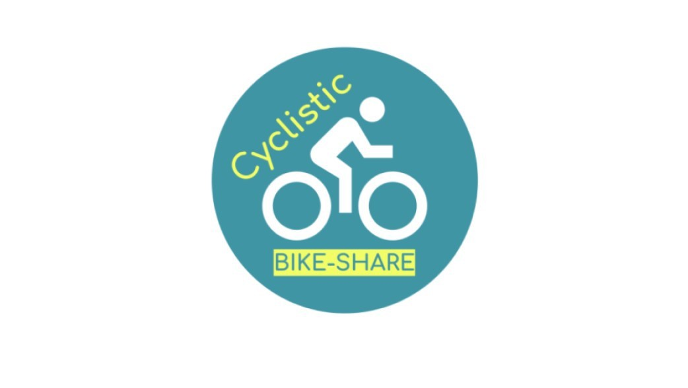

The goal of this project is to conduct an in-depth analysis of the UEFA Champions League (UCL) using historical data from 1955 to 2023. By leveraging match performance and final results data, aiming to uncover patterns, trends, and insights that have shaped the tournament over the decades.

Analyzed sales performance across California malls to uncover key factors driving higher revenue, with a focus on customer demographics and mall characteristics. This report offers actionable insights for mall operators and store managers to optimize marketing strategies and operational decisions, empowering them to boost sales and enhance overall profitability.

The project focuses on exploring the riding behaviors of casual riders versus annual members to develop strategies for converting casual riders into long-term subscribers.